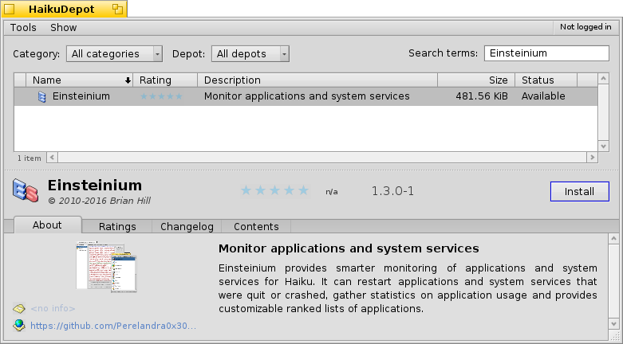

Einsteinium for Haiku OS
What is Einsteinium?
Einsteinium is a suite of applications for the Haiku OS. The current version is built for the nightly images using the new package management system. If you wish to try Einsteinium please use the link on the left to download the most recent Haiku Nightly image.
Einsteinium provides smarter monitoring of applications and system services for Haiku. The two major functions provided are:
Installing is very simple using the HaikuDepot application included in the Haiku Nightly images. Search for Einsteinium, select it in the list and click the "Install" button.

When new versions of Einsteinium are released the Haiku package manager will update the Einsteinium package as requested.
Brian Hill (@Perelandra0x309)
Issues may be logged on the project's Issues page.